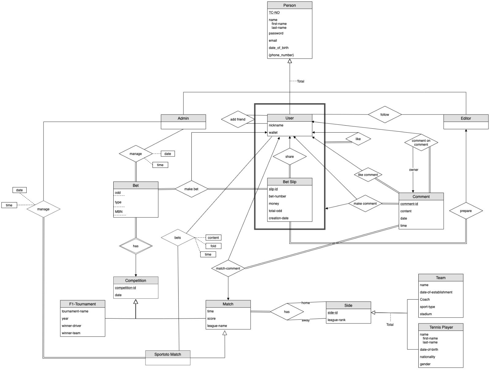

CS353 GROUP 03
Social Betting Platform
“Tekmactanyattik”
Project Proposal
Group Members
Elif Kasapoğlu 21601295
İrem Kırmacı 21501389
Ömer Faruk Kürklü 21703424
Umur Göğebakan 21702705
1. Introduction
2. Project Description
3. Requirements
3.1 Functional Requirements
3.1.1 Account Management
3.1.1.1 Admin
3.1.1.2 Editor
3.1.1.3 User
3.1.2 Wallet
3.1.3 Comment
3.1.4 Bet Slip
3.1.5 Bet
3.1.6 Match
3.1.7 Sportoto Match
3.1.8 Competition
3.1.9 Side
3.2 Nonfunctional Requirements
3.2.1 Performance
3.2.2 Concurrency
3.2.3 Security
3.2.4 Capacity
3.2.5 Reliability
3.2.6 Usability
3.2.7 Portability
4 Limitations
5 ER Diagram
References
1. Introduction
Tekmactanyattik is a social betting platform with social features. Users are able to make bets, share their bet slips, comments on matches and comment and like on other users share. In this proposal aim is to explain Tekmactanyattik’s description, functional and non-functional requirements, limitations and an E-R diagram of Tekmactanyattik. The database management system of Tekmactanyattik will be designed according to the given E-R diagram. Detailed explanation of the project will be given in Project Description.
2. Project Description
As mentioned in the Introduction, Tekmactanyattik is a social betting platform with social features.
Since it is a betting platform, matches have different types of bets which have their own odd and minimum betting number (MBN). Each bet is unique and its winning conditions are different from others. An user can create bet slips with these bets. For a bet slip to be valid, the number of bets in that slip must be equal to or greater than the maximum of the MBN of bets in that bet slip. Once the bet slip is created the user can add bets to it or remove bets from it. The user can also remove the betslip completely. Users can then put money on the bet slip from his or her wallet. The total odd of the bet slip is calculated by summing up all the odds of each bet in that bet slip. Each bet slip has its creation time and tracks whenever a bet is added.
Bets have two different types called competition: Match bet and Formula 1 Tournament. Only one bet can be played for each match. Match bets include sports: Football, Basketball and Tennis. Each match has teams or players playing them and has a league. Teams are for team sports and players are for individual sports, for this project teams are football teams, basketball teams and players are tennis players. Leagues are unique for each sport like Euroleague for basketball, Wimbledon for tennis and Super Lig for football. Each F1 Tournament has two types of bets: team bet and individual driver bet. There are also Spor Toto matches which are decided by admins.
In Tekmactanyattik users are able to share their bet slips and comment on or like other users shared bet slips. Users can also comment on matches and other comments or like a comment. Each user can add other users as friends and see their shared bet slips and activities on their timeline. Users can follow editors and see their prepared bet slips.
Tekmactanyattik has 3 different person types, editors, users and admins. Editors are able to prepare bet slips. Admins can change odds of bets, or remove a bet completely. Admins also create Spor Toto matches. Users are able to make bets and create bet slips, make Spor Toto coupons, make comments, like bet slips and comments, follow editors and add other users as friends.
Tekmactanyattik will be supported by a database management system since all above described entities should be kept in a storage and be remembered. For example teams and odds of each bet should be remembered to verify if the user won or lost. A detailed description of how the database will be designed in the form of an E-R diagram is in section 5.
3. Requirements
In this section, first functional requirements then non-functional requirements will be explained.
3.1 Functional Requirements
3.1.1 Account Management
- Each account will require a verification process.
- Users will be able to surf on the website but placing bets and all other functionalities will require a sign up / login process.
3.1.1.1 Admin
- Admins can create, remove and edit Bets. The odds for each Bet are entered by admin.
- Admins can also create Sportoto Bets.
3.1.1.2 Editor
3.1.1.3 User
- Users can follow editors.
- Users can add another user as a friend.
- Users can make a Sportoto Coupon which consists of Sportoto Bets on each row.
- Users can make a Bet Slip which consists of Bets, chosen by the user.
- Users can share their Bet Slips.
- Users can make comments on Bet Slips shared by users. Users can also make comments on already made comments.
- Users can like a comment or like a Bet Slip shared by a user.
- Users can make comments on matches.
3.1.2 Wallet
- Each account will have a wallet that will store the money of each user and will be involved in each transaction.
3.1.3 Comment
- A comment can be written by a user. It consists of a rating of the coupon and the written comment section.
3.1.4 Bet Slip
- Each Bet Slip consists of multiple Bets which are chosen by the User. The properties of each Bet is determined by Admins. The user enters the amount of money to be put and completes the process.
- Each Bet has a certain MBN (Minimum Bet Number) entered by admins, which has to be satisfied in order to successfully create a Bet Slip.
3.1.5 Bet
- Each Bet has its own odd, type and MBN (Minimum Bet Number).
- These Bets’ odds are managed by admins and stored with detailed date and time information.
- Bets are made by users and they construct a Bet Slip. A user must select a Bet to be added to Bet Slip.
- MBN attribute on each Bet identifies at least how many Bets should exist in a Bet Slip for a user to successfully play the Bet Slip.
3.1.6 Match
- Each match will be entered into the system by admins. Their score updates and Bet odds will also be determined by admins.
3.1.7 Sportoto Match
- Only admins can manage a Sportoto Match. Date and Time information of all management issues on a Sportoto Match will be stored.
- User makes Bet on Sportoto Match with its content, fold and time attributes stored.
- When a user bets on a Sportoto Match he sets to content to appropriate value to indicate his choice.
3.1.8 Competition
- Each competition can either be a Match or a F1-Tournament. These competitions' date of start will be entered by admins and will be stored in the system.
3.1.9 Side
- Side is either a Team or a Tennis player.
- Each Match has a home and an away team.
3.2 Nonfunctional Requirements
3.2.1 Performance
- Time required for all responses should not exceed 2 seconds.
- Queries should not exceed 5 seconds to return the result.
3.2.2 Concurrency
- User requests should be handled concurrently, and one user should not wait another’s to end.
- Possible concurrent transactions should be handled and the state of the user should always be stable and trackable.
3.2.3 Security
- Each user should be verified by their email.
- The personal information of the user should be protected against possible leaks.
- Only editors and already signed up users can create Bets.
- Only admins have access to manage bets and their odds.
3.2.4 Capacity
- The system should be large enough to store at least 1000 users.
3.2.5 Reliability
- There is also a need for error checking and validation function to ensure that only valid data types are stored in a defined field.
- If a crash occurs, the system should still be in a stable and precise state.
- When a user successfully creates a bet slip, its properties should be stored in the system according to the values when the slip has been created. Changing properties of bets by admins should not affect the existing bet slips.
3.2.6 Usability
- Labels should represent their functionalities explicitly.
- An average user who knows the rules of betting can understand the system.
- A user should be able to make a bet in just one minute.
- When an error occurs, the user should be informed with an explicit message showing what went wrong.
3.2.7 Portability
- System should be portable on different OS and devices since it is a web application.
4. Limitations
- Each bet is created or managed by only admins. Only admins can create a bet and only then the users are able to make that bet.
- Only one bet can be made for each match.
- For a bet slip to be valid, the number of bets in that slip must be equal to or greater than the maximum of the MBN of bets in that bet slip.
- A user can only make 30 bets maximum in one bet slip
- A user can only bet between 3-3000 Turkish Lira for one bet slip
- A user can only add 30 other users as friends.
- A user can only create one bet slip at a time, to create other bet slips he or she either must delete or finish that bet slip by putting money on it.
- For each Spor Toto coupon maximum price of the coupon cannot exceed 3000 TL.
- The maximum amount an user can win from a bet slip can not exceed 500000 TL.
- A user can not make the bet if the match of the bet has already started or finished. No live betting.
5. ER Diagram

Figure 1: Entity Relationship Diagram for Tekmactanyattik. [1]
References
[1] A. Silberschatz, H. F. Korth, and S. Sudarshan, Database system concepts, 6th ed. New York: McGraw-Hill, 2010. [Online]. Available: http://www.db-book.com/